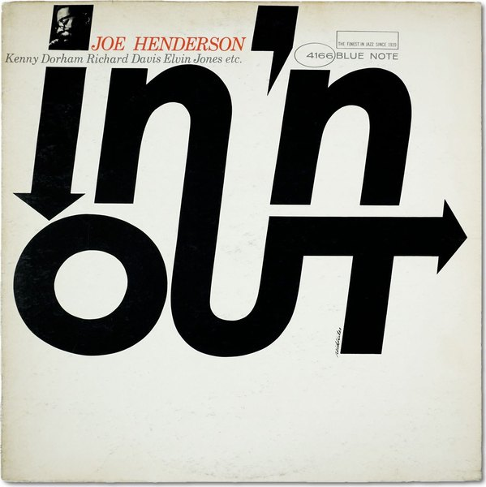
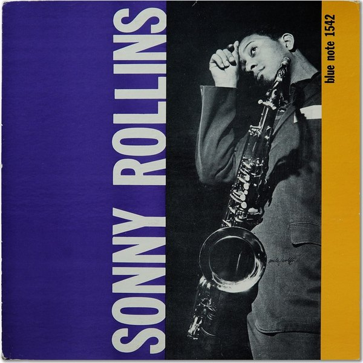
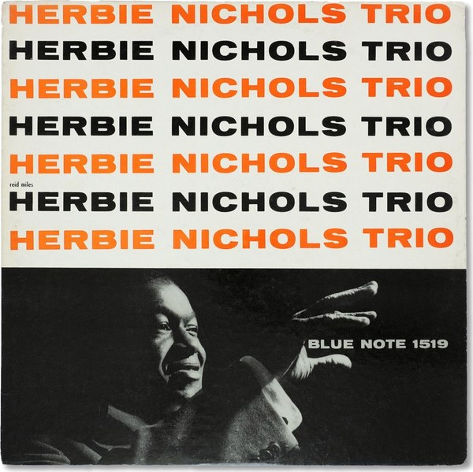

CRVI001143Jackie McLean - Destination... Out!
Designed by Larry Miller, photograph by Francis Wolff · Blue Note BLP 4165 · 1964
Designed by Larry Miller, photograph by Francis Wolff · Blue Note BLP 4165 · 1964

CRVI001309Lee Morgan - The Rumproller
Designed by Reid Miles, photograph by Francis Wolff · Blue Note 4199 · 1965
Designed by Reid Miles, photograph by Francis Wolff · Blue Note 4199 · 1965

CRVI001125Dexter Gordon - Go
Designed by Reid Miles, photograph by Francis Wolff · Blue Note BLP 4112 · 1962
Designed by Reid Miles, photograph by Francis Wolff · Blue Note BLP 4112 · 1962

CRVI001124Dexter Gordon - Gettin' Around
Designed by Reid Miles, photograph by Francis Wolff · Blue Note BST 84204 · 1965
Designed by Reid Miles, photograph by Francis Wolff · Blue Note BST 84204 · 1965

CRVI001144Jackie McLean - It's Time!
Designed by Reid Miles, photograph by Francis Wolff · Blue Note BLP 4179 · 1965
Designed by Reid Miles, photograph by Francis Wolff · Blue Note BLP 4179 · 1965

CRVI001120Bobby Hutcherson - Stick-Up!
Designed by Reid Miles, photograph by Francis Wolff · Blue Note BST 84244 · 1968
Designed by Reid Miles, photograph by Francis Wolff · Blue Note BST 84244 · 1968

CRVI001267Horace Parlan Quintet - Speakin' My Piece
Designed by Reid Miles, photograph by Francis Wolff · Blue Note 4043 · 1960
Designed by Reid Miles, photograph by Francis Wolff · Blue Note 4043 · 1960

CRVI001145Jackie McLean - Let Freedom Ring
Designed by Reid Miles, photograph by Francis Wolff · Blue Note BLP 4106 · 1963
Designed by Reid Miles, photograph by Francis Wolff · Blue Note BLP 4106 · 1963

CRVI001303Horace Parlan - Happy Frame Of Mind
Designed by Reid Miles, photograph by Francis Wolff · Blue Note 4134 · 1966
Designed by Reid Miles, photograph by Francis Wolff · Blue Note 4134 · 1966

CRVI001367Joe Henderson - In 'n Out
Designed by Reid Miles, photograph by Francis Wolff · Blue Note 4166 · 1965
Designed by Reid Miles, photograph by Francis Wolff · Blue Note 4166 · 1965

CRVI001149Jimmy Smith - A New Sound... A New Star... Jimmy Smith At The Organ Volume 1
Designed by Reid Miles, photograph by Francis Wolff · Blue Note BLP 1512 · 1956
Designed by Reid Miles, photograph by Francis Wolff · Blue Note BLP 1512 · 1956

CRVI001271Art Blakey & The Jazz Messengers - Indestructible
Designed by Reid Miles, photograph by Francis Wolff · Blue Note 4193 · 1966
Designed by Reid Miles, photograph by Francis Wolff · Blue Note 4193 · 1966

CRVI001164Lee Morgan - Cornbread
Designed by Reid Miles, photograph by Francis Wolff · Blue Note BST 84222 · 1967
Designed by Reid Miles, photograph by Francis Wolff · Blue Note BST 84222 · 1967

CRVI001206The Jazz Messengers - The Complete Jazz Messengers At The Cafe Bohemia
Designed by Reid Miles, photograph by Francis Wolff · Blue Note · 1956
Designed by Reid Miles, photograph by Francis Wolff · Blue Note · 1956

CRVI001135Grant Green - Sunday Mornin'
Designed by Reid Miles, photograph by Francis Wolff · Blue Note BLP 4099 · 1962
Designed by Reid Miles, photograph by Francis Wolff · Blue Note BLP 4099 · 1962

CRVI001264Paul Chambers Quartet - Bass On Top
Designed by Harold Feinstein, photograph by Francis Wolff · Blue Note 1569 · 1957
Designed by Harold Feinstein, photograph by Francis Wolff · Blue Note 1569 · 1957

CRVI001307Lee Morgan - Charisma
Designed by Ann Meisel, photograph by Francis Wolff · Blue Note 4312 · 1969
Designed by Ann Meisel, photograph by Francis Wolff · Blue Note 4312 · 1969

CRVI001162Kenny Dorham - Una Mas
Designed by Reid Miles, photograph by Francis Wolff · Blue Note BLP 4127 · 1963
Designed by Reid Miles, photograph by Francis Wolff · Blue Note BLP 4127 · 1963

CRVI001139The Horace Silver Quintet - Horace-Scope
Artwork by Paula Donohue, photograph by Francis Wolff · Blue Note BLP 4042 · 1960
Artwork by Paula Donohue, photograph by Francis Wolff · Blue Note BLP 4042 · 1960

CRVI001165Lee Morgan - The Sidewinder
Designed by Reid Miles, photograph by Francis Wolff · Blue Note BLP 4157 · 1964
Designed by Reid Miles, photograph by Francis Wolff · Blue Note BLP 4157 · 1964

CRVI001277George Wallington And His Band - George Wallington Showcase
Designed by John Hermansader, photograph by Francis Wolff · Blue Note 5045 · 1954
Designed by John Hermansader, photograph by Francis Wolff · Blue Note 5045 · 1954

CRVI001176Tina Brooks - True Blue
Designed by Reid Miles, photograph by Francis Wolff · Blue Note BLP 4041 · 1960
Designed by Reid Miles, photograph by Francis Wolff · Blue Note BLP 4041 · 1960

CRVI001141Jackie McLean - Bluesnik
Designed by Reid Miles, photograph by Francis Wolff · Blue Note BLP 4067 · 1962
Designed by Reid Miles, photograph by Francis Wolff · Blue Note BLP 4067 · 1962

CRVI001160Kenny Burrell - Midnight Blue
Designed by Reid Miles, photograph by Francis Wolff · Blue Note BLP 4123 · 1963
Designed by Reid Miles, photograph by Francis Wolff · Blue Note BLP 4123 · 1963

CRVI001269Grachan Moncur III - Evolution
Designed by Reid Miles, photograph by Francis Wolff · Blue Note 4153 · 1964
Designed by Reid Miles, photograph by Francis Wolff · Blue Note 4153 · 1964

CRVI001161Kenny Dorham - Trompeta Toccata
Designed by Reid Miles, photograph by Francis Wolff · Blue Note BLP 4181 · 1965
Designed by Reid Miles, photograph by Francis Wolff · Blue Note BLP 4181 · 1965

CRVI001147Jackie McLean - Vertigo
Designed by Patrick Roques, photograph by Francis Wolff · Blue Note LT-1085 · 2000
Designed by Patrick Roques, photograph by Francis Wolff · Blue Note LT-1085 · 2000

CRVI001265Donald Byrd - Off To The Races
Designed by Reid Miles, photograph by Francis Wolff · Blue Note 4007 · 1959
Designed by Reid Miles, photograph by Francis Wolff · Blue Note 4007 · 1959

CRVI001308Lee Morgan - The Procrastinator
Designed by Patrick Roques, photograph by Francis Wolff · Blue Note LT-1044 · 1978
Designed by Patrick Roques, photograph by Francis Wolff · Blue Note LT-1044 · 1978

CRVI001172Sonny Clark - Cool Struttin'
Designed by Reid Miles, photograph by Francis Wolff · Blue Note BLP 1588 · 1958
Designed by Reid Miles, photograph by Francis Wolff · Blue Note BLP 1588 · 1958

CRVI001130Freddie Hubbard - Hub-Tones
Designed by Reid Miles, photograph by Francis Wolff · Blue Note BLP 4115 · 1962
Designed by Reid Miles, photograph by Francis Wolff · Blue Note BLP 4115 · 1962

CRVI001268Ike Quebec - It Might As Well Be Spring
Designed by Reid Miles, photograph by Francis Wolff · Blue Note 4105 · 1962
Designed by Reid Miles, photograph by Francis Wolff · Blue Note 4105 · 1962

CRVI001153John Coltrane - Blue Train
Designed by Reid Miles, photograph by Francis Wolff · Blue Note BLP 1577 · 1958
Designed by Reid Miles, photograph by Francis Wolff · Blue Note BLP 1577 · 1958

CRVI001365Sonny Rollins - Sonny Rollins, Volume 1
Designed by Reid Miles, photograph by Francis Wolff · Blue Note 1542 · 1957
Designed by Reid Miles, photograph by Francis Wolff · Blue Note 1542 · 1957

CRVI001126Dexter Gordon - Our Man In Paris
Designed by Reid Miles, photograph by Francis Wolff · Blue Note BLP 4146 · 1963
Designed by Reid Miles, photograph by Francis Wolff · Blue Note BLP 4146 · 1963

CRVI001146Jackie McLean - Right Now!
Designed by Reid Miles, photograph by Francis Wolff · Blue Note BST 84215 · 1966
Designed by Reid Miles, photograph by Francis Wolff · Blue Note BST 84215 · 1966

CRVI001166McCoy Tyner - The Real McCoy
Designed by Reid Miles, photograph by Francis Wolff · Blue Note BLP 4264 · 1967
Designed by Reid Miles, photograph by Francis Wolff · Blue Note BLP 4264 · 1967

CRVI001364Herbie Nichols Trio - Herbie Nichols Trio
Designed by Reid Miles, photograph by Francis Wolff · Blue Note 1519 · 1956
Designed by Reid Miles, photograph by Francis Wolff · Blue Note 1519 · 1956

CRVI001148Jimmy Smith - A New Sound... A New Star... Jimmy Smith At The Organ Volume 2
Designed by Reid Miles, photograph by Francis Wolff · Blue Note BLP 1514 · 1956
Designed by Reid Miles, photograph by Francis Wolff · Blue Note BLP 1514 · 1956

CRVI001305Horace Parlan - Us Three
Designed by Reid Miles, photograph by Francis Wolff · Blue Note 4037 · 1960
Designed by Reid Miles, photograph by Francis Wolff · Blue Note 4037 · 1960

CRVI001266The Horace Silver Quintet - Finger Poppin'
Designed by Reid Miles, photograph by Francis Wolff · Blue Note 4008 · 1959
Designed by Reid Miles, photograph by Francis Wolff · Blue Note 4008 · 1959

CRVI001273Thelonious Monk - Genius Of Modern Music, Volume 1
Designed by Paul Bacon, photograph by Francis Wolff · Blue Note 5002 · 1951
Designed by Paul Bacon, photograph by Francis Wolff · Blue Note 5002 · 1951

CRVI001116Andrew Hill - Judgment!
Designed by Reid Miles, photograph by Francis Wolff · Blue Note BLP 4159 · 1964
Designed by Reid Miles, photograph by Francis Wolff · Blue Note BLP 4159 · 1964

CRVI001263Curtis Fuller - The Opener
Photograph by Francis Wolff · Blue Note 1567 · 1957
Photograph by Francis Wolff · Blue Note 1567 · 1957

CRVI001122Cannonball Adderley - Somethin' Else
Designed by Reid Miles, photograph by Francis Wolff · Blue Note BLP 1595 · 1958
Designed by Reid Miles, photograph by Francis Wolff · Blue Note BLP 1595 · 1958